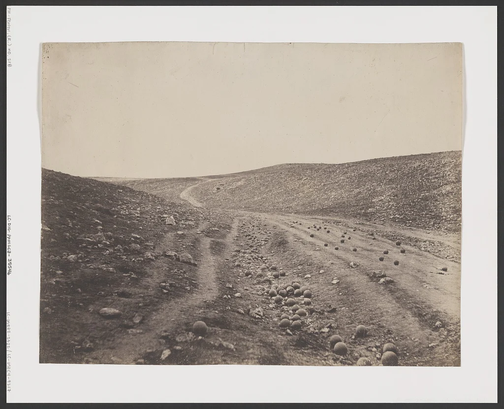

死荫之谷罗杰·芬顿 Roger Fenton · 1855 年 · 摄影

一条弯路，满地圆形：看不见交战的人，仍能感到战争的重量。
宽路向内收窄，转入坡后；细小圆形，把远近变得可量。
暖褐近单色，靠明度分层；浅天空，对上密集暗地。
圆球与贴地小影子相连，让空旷之处仍有重量。
湿版玻璃底片；曝光与显影，须赶在干燥之前。
英国摄影家芬顿，1855 年赴前线；早期系统记录战争的摄影者之一。
在我看来：看清圆点是炮弹后，原本平静的地面突然变重。
弯路引导视线，小物件给出尺度；用机位取景，记录中说明摆拍。
60% 石灰白 / 30% 灰赭 / 10% 炭褐
编辑练习色，非原物测色。
罗杰·芬顿 · 1855来源：美国国会图书馆 · ppmsca.35546
版权归原作者；本历史图像为公有领域。赏析为独立观点；原图有两个版本。